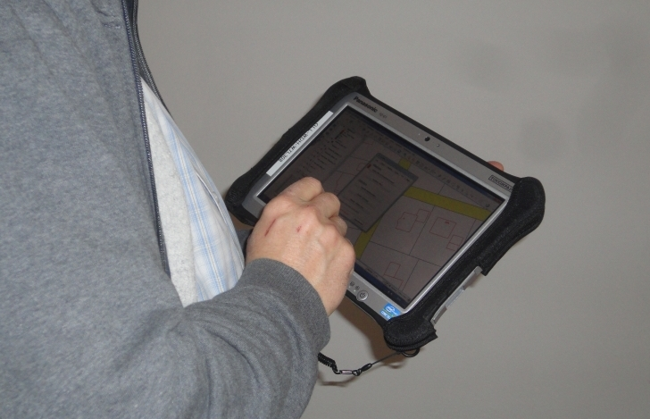
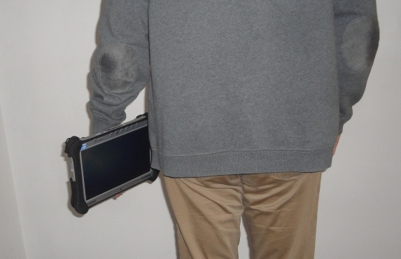
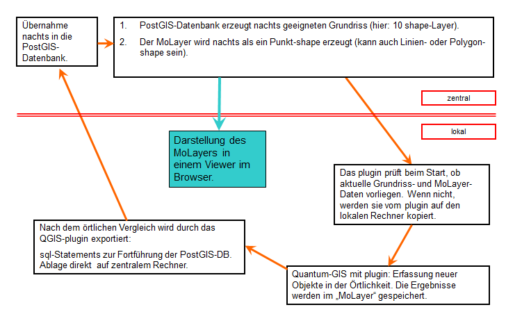
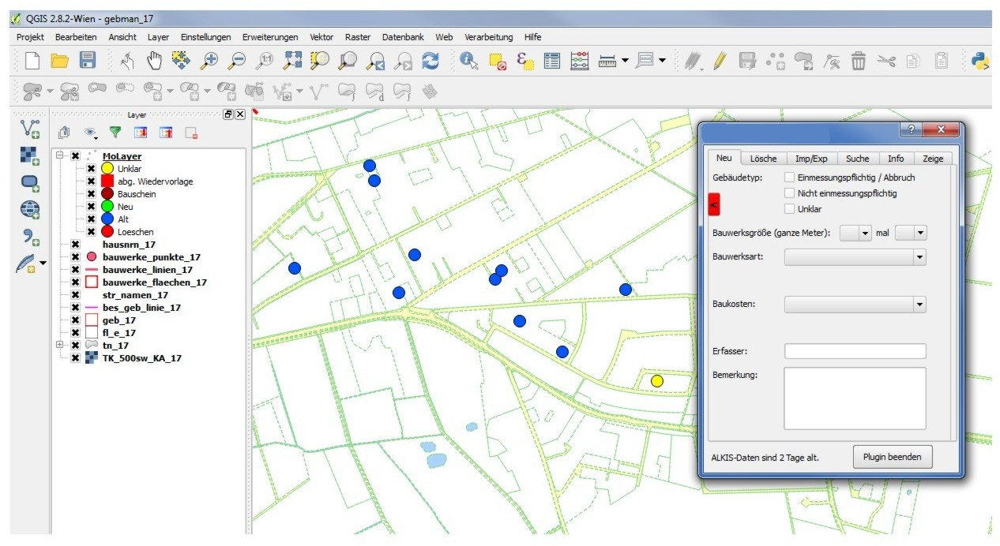
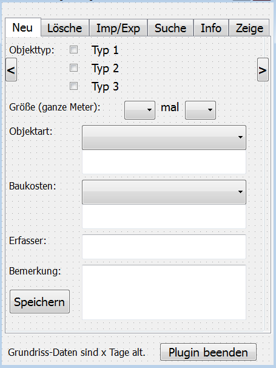

Auf dieser Seite werden Fallstudien aus Deutschland vorgestellt. Wenn Ihre Fallstudie auch dabei sein soll, dann melden Sie sich bei uns.
In der Vermessungs- und Katasterverwaltung Niedersachsens wird im 3-Jahresturnus die Landesfläche beflogen. Die Luftbilder werden anschließend auch dafür genutzt, den Gebäudebestand mit dem amtlichen Nachweis der Gebäude in ALKIS abzugleichen. In den Luftbildern taucht eine größere Zahl von Gebäuden auf, die in ALKIS nicht nachgewiesen werden. Manche davon sind nach den Kriterien der Katasterverwaltung einmessungspflichtig, manche nicht. Oft ist das im Luftbild nicht zu erkennen und es muss ein örtlicher Vergleich durchgeführt werden. Diese Vorgehensweise wurde in der Vergangenheit auf analogen Kartenausschnitten dokumentiert, die nach dem Abschluss des gesamten Verfahrens vernichtet wurden. Im nächsten 3-Jahresturnus wurden Gebäude, die im Luftbild erkennbar waren, wieder örtlich verglichen, auch wenn sie im letzten Turnus schon als nicht-einmessungspflichtig eingestuft wurden. Durch ein digitales Dokumentationsverfahren werden die analogen Auszüge überflüssig, und ein mehrfaches Vergleichen derselben Objekte wird vermieden. –
In der Katasterverwaltung wird ArcMap von Esri als GIS-System eingesetzt. Für den Einsatz vor Ort müssten dafür weitere Lizenzen gekauft werden. Da dieser zusätzliche Kostenfaktor vermieden werden soll, wird QGIS als kostenlose und leistungsfähige Alternative eingesetzt. Ursprünglich im Rahmen einer Bachelorarbeit ist zusätzlich ein python-plugin entstanden, welches über eine Menüoberfläche in QGIS die Erfassung neuer Objekte mit Attributen ermöglicht.
Für den örtlichen Vergleich wird ein 10,1-Zoll-Tablet mit Windows7 genutzt. Als Grundlage dient QGIS. Für die Personen, die vor Ort erfassen (in der Regel ohne GIS-Erfahrung), wird die Oberfläche von QGIS so einfach wie möglich gehalten; nicht benötigte Menüknöpfe werden ausgeblendet. Für die Erfassung der Daten in einem mobilen shape-Layer (MoLayer) wird ein plugin mit eigener Erfassungsoberfläche verwendet. Das plugin in QGIS tut im Wesentlichen folgendes:



Wie in diesem Schaubild an dem grünen Kasten zu erkennen ist, gibt es in den Katasterämtern Niedersachsens auch einen Viewer, der ebenfalls von der zentralen PostGIS-Datenbank gespeist wird, und in dem der MoLayer eingebunden ist. Die örtliche Erfassung mit dem QGIS-plugin ist aber völlig unabhängig davon.


Im oberen Bereich wird die Klassifizierung eines neuen Objektes vorgenommen, darunter können weitere Attribute zum Objekt erfasst werden.
Das plugin hat sich in der Katasterverwaltung bewährt. Auch GIS-unerfahrenes Personal kann in vielen Fällen mit dem System arbeiten, wenn es von vorne herein möglichst einfach an die Hand gegeben wird. QGIS in der Grundeinstellung direkt nach der Installation ist dafür zu unübersichtlich. Wichtig ist auch ein leichter Tablet-PC: Es sollte ein Kilogramm Gewicht möglichst nicht überschritten werden. Smartphones mit Android haben ein zu kleines Display – 10,1 Zoll wird von vielen als Minimum empfunden.
Das QGIS-plugin zur Erfassung vor Ort in einem mobilen Layer (MoLayer) ist für viele Fälle einsetzbar. Der Code muss dabei auf den individuellen Fall angepasst werden. Der Ablauf wird aber immer ähnlich sein.
Welche Art von Grundriss benötigt wird, ist individuell einstellbar; hier ist es ALKIS in zehn shape-Layern. Das könnten auch Rasterdaten sein, Open-Street-Map-Daten oder andere.
Wo die zentrale Datenbank liegt, also wo der MoLayer im Original gespeichert wird, ist dabei unerheblich; theoretisch kann es auch eine lokale Datenbank sein.
Das Importformat für die Datenbank, das Ergebnis dessen, was örtlich erfasst wurde, ist sql.
Das Exportformat für die Datenbank, die Daten, die dann in QGIS benutzt werden, ist in diesem Falle shape, kann aber auch SpatialLite sein. Grundsätzlich kann es jedes Format sein, das die Datenbank exportieren und QGIS lesen kann.
Entstanden ist das plugin im Rahmen einer Bachelorarbeit in 2013 durch Elke Crone (Matrikelnummer 5024199 – Jadehochschule Wilhelmshaven, Oldenburg, Elsfleth). Es wurde und wird umfassend angepasst und erweitert durch Uwe Brengelmann (LGLN Niedersachsen, RD Oldenburg-Cloppenburg, Katasteramt Wildeshausen).